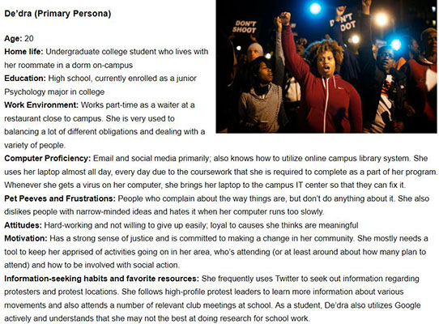
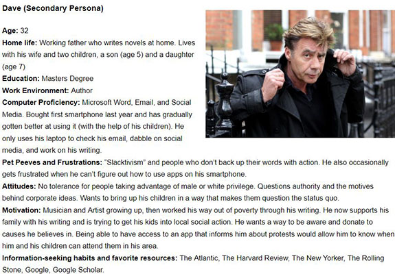

The purpose of this mobile application was to provide #BlackLivesMatter protesters with a way to quickly find protests to participate in and to receive timely updates as each protest that they are subscribed to occurs. The app also would have enabled those who are apart of #BlackLivesMatter organizations to create protest events and send out real-time updates as a protest occurs.
After talking to activists, protestors, and others, I analyzed the commonalities of those who tend to participate in #BlackLivesMatter protests and came up with the following characteristics for expected users:
Two user personas were developed in order to capture the users who would be using this mobile application.
 
I developed a hierarchical description, several use cases, and scenarios of use in order to analyze what tasks the users would need to do. After reviewing my notes from conversations with #BlackLivesMatter activists, I realized that there was an additional user that needed to be considered. That user included Protest Organizers. This made De'dra and Protest Organizers the primary user set, leaving Dave to be the secondary user. Those who create and organize protests would be Protest Organizers and those who receive information about protests would be protesters who are in the field (like De’dra) and those who want to contribute in some way (like Dave).
In order to make things clearer, I divided up the use cases based on each user so that I could have a better understanding of the workflow for each. Once it was established that I would need to account for two primary user set
During this project, I broke down each of the design decisions based first on the users' characteristics and needs and then the task(s) that would be affected by using this application. I also considered other applications that these users may also be using to understand how well the flows from those applications work for users currently. From there, I used my knowledge of UX principles to understand what would make a certain decision effective.
Below is an example of one of the design decisions that I considered and how I came to my solution:
I surveyed three examples of commonly used mapping interfaces-- Apple Maps, Google Maps, and Waze Maps-- and analyzed their structure and user flows. In the end, I settled on displaying the map similarly to Google Maps. There were two rationales for this design decision. Not only would this clean display reduce complexity in the interface, but its familiarity would make it even easier to use. This design was influenced by the Hick's Law and Ockham's Razor, as well as the tools that my users were used to using.
This project taught me how to consider and effectively act on all of the nuances of a user's interaction with a product. It is imperative to not get attached to initial design decisions and even more important to consistently take in user feedback to finesse the overall experience. In order to be successful, you must always keep your users at the center of your designs. In my role, I was required to be the expert on my users and their goals. I also needed to make the distinction between their desires and their needs, even when they weren't able to communicate those needs.